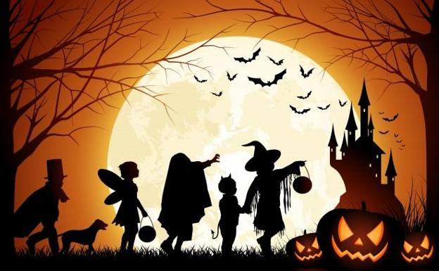

Hoy en día, Halloween es una de las fechas más importantes del calendario festivo estadounidense y canadiense. Algunos países iberoamericanos, conociendo aún esta festividad, tienen sus propias tradiciones y celebraciones ese mismo día, aunque coinciden en cuanto a su significado: la unión o extrema cercanía del mundo de los vivos y el reino de los muertos,Originalmente el truco o trato (en inglés «Trick-or-treat») era una leyenda popular de origen céltico según la cual no solo los espíritus de los difuntos eran libres de vagar por la Tierra la noche de Halloween, sino toda clase de entes procedentes de todos los reinos espirituales. Entre ellos había uno terriblemente malévolo que deambulaba por pueblos y aldeas, yendo de casa en casa pidiendo precisamente «truco o trato». La leyenda asegura que lo mejor era hacer trato, sin importar el costo que este tuviera, pues de no pactar con este espíritu (que recibiría el nombre de jack-o'-lantern, con el que se conocen a las tradicionales calabazas de Halloween), él usaría sus poderes para hacer «truco», que consistiría en maldecir la casa y a sus habitantes, dándoles toda clase de infortunios y maldiciones, como enfermar a la familia, matar al ganado con pestes o hasta quemar la propia vivienda. Como protección surgió la idea de crear en las calabazas formas horrendas, para así evitar encontrarse con dicho espectro (y con el tiempo, debido a la asociación mental entre el espíritu y las calabazas[cita requerida], el nombre de este sería dado a ellas, que es como son conocidas hoy día cuando llega esta fiesta).
DE NUESTROS DISFRACES. RESERVA YA TU DISFRAZ PARA HALLOWEEN Y QUEDATE CON LOS MEJORES PERSONAJES DE LA TEMPORADA.
Se trata de una tradición de origen celta para celebrar el fin de verano y las cosechas irlandesas Halloween es una fiesta de origen pagano que se celebra la noche del 31 de octubre, víspera del Día de Todos los Santos (su versión cristiana), y que tiene sus raíces en el antiguo festival celta conocido como Samhain (pronunciado «sow-in»), que significa «fin del verano» y se celebraba al finalizar la temporada de cosechas en Irlanda para dar comienzo al «año nuevo celta», coincidiendo con el solsticio de otoño. Durante esa noche se creía que los espíritus de los difuntos caminaban entre los vivos, y se realizaban fiestas y ritos sagrados que incluían la comunicación con los muertos. Además, era habitual colocar una vela encendida en las ventanas para que los muertos «encontrasen su camino».
